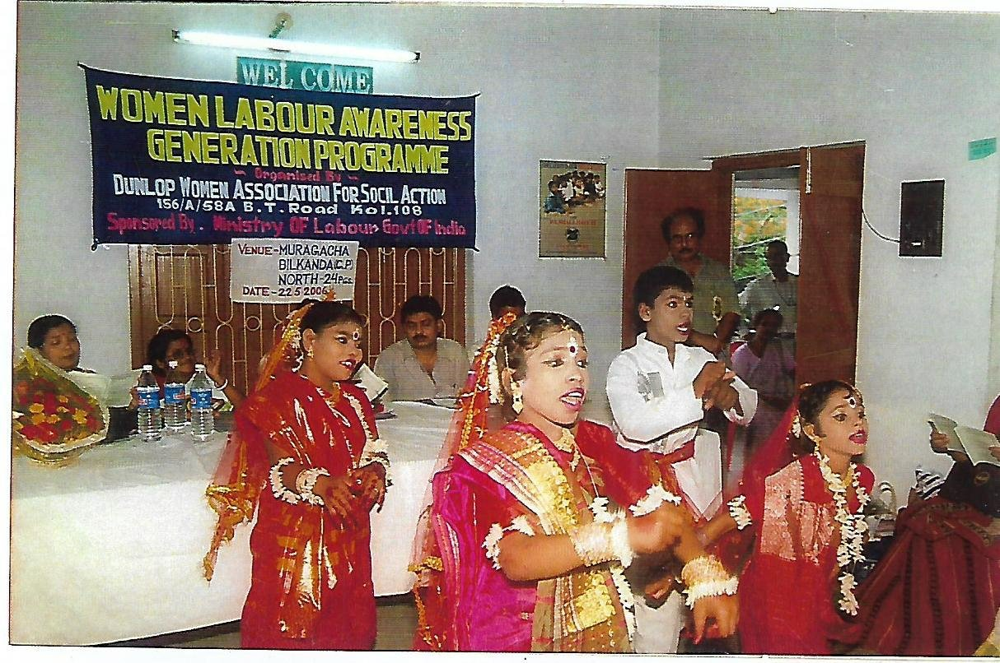
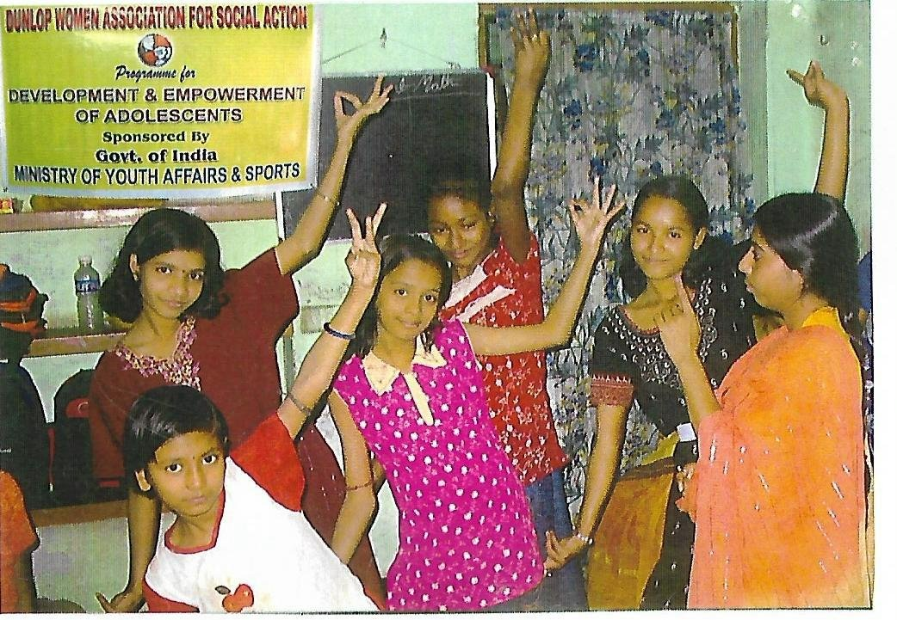
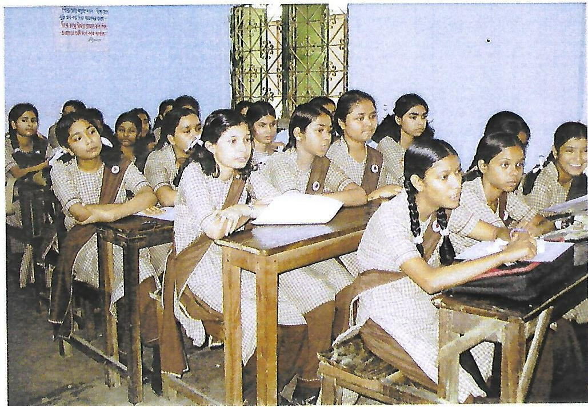
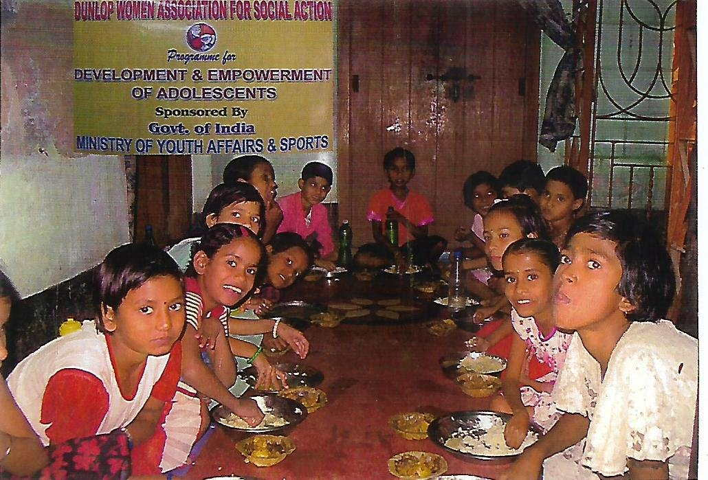

DWASA works tirelessly to break the cycle of poverty through education, health awareness, women empowerment, and community development across West Bengal and Jharkhand.

Founded in 1997 and registered under the West Bengal Society Act 1961, Dunlop Women Association for Social Action (DWASA) has been at the forefront of community development — empowering marginalised women, children, and families across Bengal and Jharkhand.
We believe that every person has the right to access resources and opportunities to live with dignity. From rural sanitation to urban road safety, our work spans communities, borders, and generations.
"From the marginalised beneficiary in a remote village to the People's organisations, we see the beginning of transformational changes as our people start walking with a new purpose."



From education to road safety, our programmes touch every dimension of community well-being.
Rallies, posters, and workshops across Kolkata and Jharkhand to reduce road fatalities and build a safety-first culture.
Learn more →Vocational training, self-help groups, legal awareness, and financial literacy for women from marginalised backgrounds.
Learn more →Free coaching for Class 5–12 students, book distribution, and academic support for underprivileged children.
Learn more →Health awareness sessions on maternal care, nutrition, immunisation and child health for 200+ mothers across rural Bengal.
Learn more →Free health check-ups, workshops on hygiene, menstrual health, anaemia, and nutrition for underprivileged communities.
Learn more →Knitting, jute bags, clay modelling and other craft skills taught to women — fostering self-reliance and income generation.
Learn more →A glimpse into the lives we've touched and the programmes we've run across two states.
"This year has been a journey of commitment, compassion, and collective effort. With the continued guidance of our Executive Committee and the tireless dedication of our members and volunteers, our organisation has worked steadily towards its core mission — empowering women, promoting social justice, and supporting the health, education, and dignity of marginalised communities."
Every donation — big or small — directly funds education, health, and empowerment programmes for thousands of people in need.